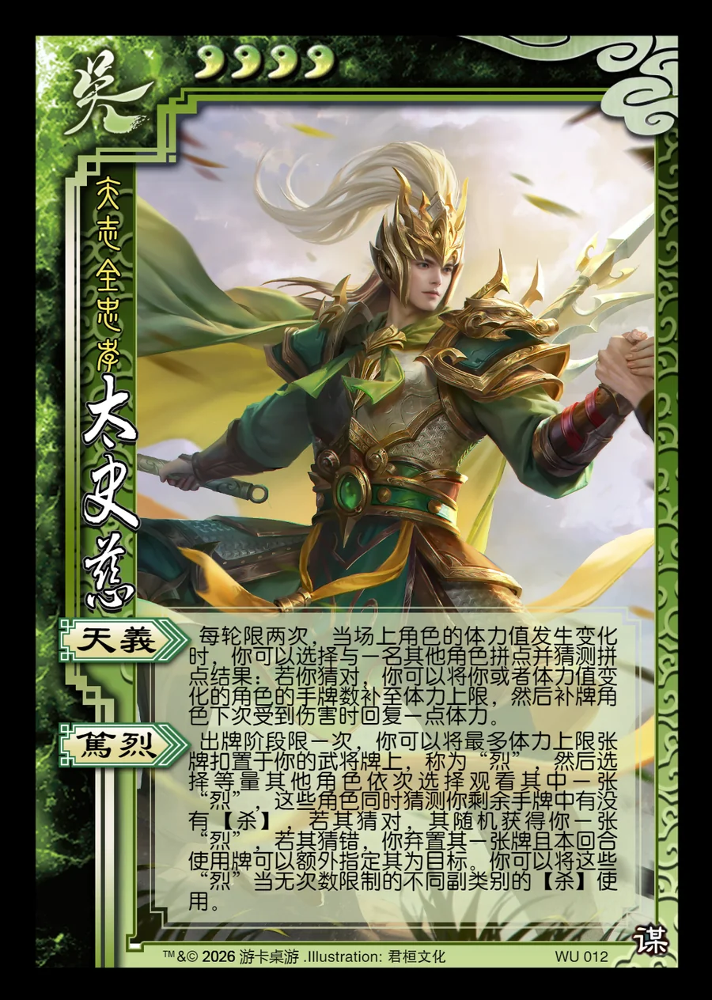

点击卡面查看大图
吴
谋太史慈
♥4矢志全忠孝
天义
每轮限两次，当场上角色的体力值发生变化时，你可以选择与一名其他角色拼点并猜测拼点结果：若你猜对，你可以将你或者体力值变化的角色的手牌数补至体力上限，然后补牌角色下次受到伤害时回复一点体力。
笃烈
出牌阶段限一次，你可以将最多体力上限张牌扣置于你的武将牌上，称为“烈”，然后选择等量其他角色依次选择观看其中一张“烈”，这些角色同时猜测你剩余手牌中有没有【杀】，若其猜对，其随机获得你一张“烈”，若其猜错，你弃置其一张牌且本回合使用牌可以额外指定其为目标。你可以将这些“烈”当无次数限制的不同副类别的【杀】使用。